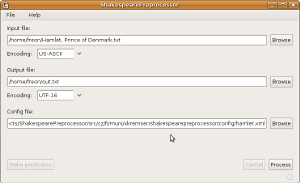

 Je-li program spuštěm bez parametrů, je otevřen v grafické podobě jak je znázorněno na obrázku. Ovládání je snadné. Uživatel musí vybrat vstupní soubor s daty určenými k preprocessingu, výstupní soubor, kam se zapíše prologovský program a soubor s nastavením preprocessingu, který bude podrobně probrán v části nastavení. Povinností uživatele je rovněž vybrat znakovou sadu vstupního a výstupního souboru. Program předpokládá znakovou sadu UTF-8 konfiguračního XML souboru, což je pro XML standard. Program nezjišťuje korektnost uživatelem zvolených znakových sad, proto je vhodné ověřit znakovou sadu vstupního souboru například v shellu příkazem enca input_file nebo file -i input_file. Samotný preprocessing dat je po nastavení souborů uskutečněn ve dvou fázích, první fáze, kdy se vstup načte do paměti, se provede klikem na tlačítko Process a druhá, kdy je vytvořen a zapsán prologovský program, se provede po kliku na tlačítko Make predicates. Grafické rozhraní má oproti CLI výhodu, že je-li zvolen MBSP tagger, je proces načtení a označkování časově náročnější, a uživatel je průběžně informován o stavu preprocessingu v podobě progress baru a procent.
{kind=link}